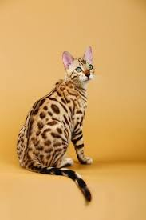
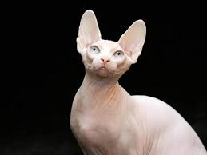
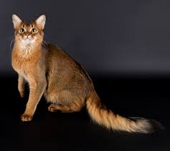
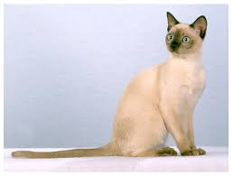
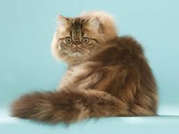
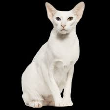
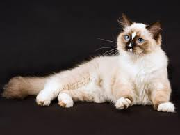
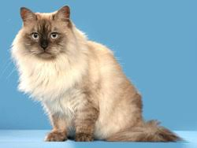

Les races
- BENGAL
- En 1963, Jean Sugden, éleveuse en Californie, acheta un chat-léopard d’Asie, Felis prionailurus bengalensis, c’est-à-dire un chat sauvage, panthère miniature à la robe tachetée, à la fois grand nageur et pêcheur de poisson. Elle le croisa avec une chatte American Shorthair afin de créer une race de chats domestiques avec des traits caractéristiques des chats sauvages. Les chattes issues de cette hybridation étaient fertiles. Croisées avec leur père, elles donnèrent naissance à des chatons à robe tachetée. Le Bengal était crée. En 1973, le Dr Centerwall de l’université de Californie continua ces hybridations pour tester la résistance du chat-léopard asiatique au virus de la leucose féline. Il donna huit de ces hybrides à J. Sugden devenue Mme Mill, qui continua son programme d’élevage et de sélection. Le Siamois, le Mau égyptien, le Burmese furent utilisés par les éleveurs pour créer de nouvelles lignées. Le premier sujet de race, « Millwood Finally Found » est enregistré à la T.I.C.A. en 1983. La C.F.A. ne l’a pas reconnu alors que la F.I.Fe vient de le faire. En France, il apparaît en 1991. Cette race fait partie de la nouvelle génération des « sauvages » et est peu répandue.
- SPHYNX
- Les chats nus sont apparus dans le monde à différentes époques. Des chats mexicains à peau nue remonteraient à l’ère précolombienne. En 1938, le professeur E. Létard décrit en France l’allèle mutant h de chatons nus provenant d’un couple de Siamois. En 1966, la chatte Elisabeth de Mme Micalwaith, en Ontario, au Canada, donna naissance à un mâle nu appelé Prune. Prune et Elisabeth eurent des chatons nus. La mutation spontanée responsable de ce caractère est due à l’allèle récessif hr. Toujours dans l’Ontario et à la même époque, Mme Smith découvrit Bambi, mâle nu blanc et noir. Pinkie et Squeakie, deux femelles nues, furent adoptées aux Pays-Bas par Hugo Hernandez. Dans les années quatre-vingt, des cas similaires sont décrits en Grande-Bretagne. Alors que ces chats étaient délaissés aux Etats-Unis, des éleveurs européens s’y intéressèrent, notamment des Français, dès 1983, ainsi que des éleveurs néerlandais. Il est vrai qu’on ne peut rester indifférent devant de tels chats, adorés par les uns, décriés et honnis par les autres. Devant le succès et la curiosité suscitée, lors d’expositions, les éleveurs américains importèrent des Sphynx d’Europe. La race est reconnue par la T.I.C.A., mais la C.F.A. et la F.I.Fe ont refusé de le faire. Le Sphynx est très peu répandu.
- SOMALI
- Depuis longtemps, dans les portées d’Abyssin, d’ailleurs de type beaucoup plus substantiel que celui d’aujourd’hui, apparaissent des chatons à poil doux et mi-long. Mais les éleveurs les considéraient comme sans intérêt et les écartaient de la reproduction. Le gène responsable du poil mi-long aurait été introduit par croisement entre l’Abyssin et des chats à poil long (Persans ou Angoras). Au Canada, ce n’est que dans les années soixante, que les éleveurs Don Richings, Mary Mailing et le juge Ken Mac Gill s’intéressèrent à ces nouveaux chats. En 1967, l’éleveuse américaine Evelyn Mague réussit à fixer le caractère poil mi-long chez l’Abyssin. La nouvelle race fut baptisée Somali, en référence au pays voisin de l’Ethiopie, berceau supposé de l’Abyssin. E. Mague créa la chatterie Lynn Lee’s et le premier Club de la race aux Etats-Unis. Elle exposa le premier Somali en 1972. La C.F.A. reconnaît la race en 1978.Lynn Lee’s Picasso et Lynn Lee’s Pearl, deux Somali provenant de la chatterie d’E. Mague, arrivèrent en France en 1979. La F.I.Fe homologua la race en 1982. Ce chat est très prisé par un public toujours plus nombreux.
- TONKINOIS
- Une nouvelle race, créée en Amérique du Nord et au Canada dans les années trente, en croisant le Siamois avec le Burmese, baptisée alors Siamois doré, et qui n’attira guère le public. Notons qu’à cette époque le Siamois était plus fort, plus robuste, et le Burmese moins rond qu’aujourd’hui. Il a fallu attendre 1960 pour que ce chat rebaptisé Tonkinois soit enfin apprécié. Il est reconnu en 1974 par la Canadian Cat Association et en 1978 par la C.F.A. . Le Tonkinois, populaire aux Etats-Unis, reste rare en Europe.
- PERSAN
- Les chats à poils longs étaient inconnus en Europe jusqu’aux environs du milieu du XVIe siècle. Les premiers ancêtres du Persan ont été importés de Perse (l’Iran actuel) en Italie, au XVIIe siècle, par Pietro della Valle. Plus tard, Nicolas Fabri de Peiresec, conseiller au Parlement d’Aix-en-Provence, ramena en France des chats de Turquie (type Angora ?). Ces chats furent très prisés par l’aristocratie européenne. Louis XV possédait un Persan angora blanc. Dans la première moitié du XIXe siècle, quelques »Persans », élevés en Italie et introduits en France et en Angleterre, furent croisés avec des »Persans » d’origine turque. Les premiers sujets furent exposés au Crystal Palace de Londres en 1871. À cette époque, un programme d’élevage et de sélection est organisé par des éleveurs britanniques. Des croisements furent pratiqués avec des chats Angora pour améliorer la fourrure. Par ailleurs, un travail systématique fut entrepris pour étendre la gamme de couleurs et de motifs aboutissant actuellement à plus de 200 variétés. Ainsi le Persan smoke ou fumé, issu d’accouplements entre Persans noirs, blancs et bleus, est exposé à Brighton en 1872. Le chat »Silver » fut le premier Persan Chinchilla exposé à Londres en 1888. Les Persans colourpoint, appelés Himalayan aux États-Unis et considérés comme une race à part par la T.I.C.A. et Kmehr (ou Kmer) en Allemagne, apparurent vers 1920. Les Persans tabby, apparus il y a plus d’un siècle, furent exposés à Paris en 1927 sous le nom de »tigrés ». Toujours au XIXe siècle, les Anglais ont sélectionné les chats les plus massifs, les plus ronds. Aux États-Unis, vers 1930, les éleveurs obtinrent un type bréviligne extrême, baptisé »Peke Face » (face de Pékinois). Le Persan, sans doute la race la plus célèbre au monde, a probablement participé à la création du Chat sacré de Birmanie et du British Shorthair.
- ORIENTAL
- Originaires tous les deux de Thaïlande, l’Oriental ne diffère du Siamois que par la couleur du pelage et des yeux. Pour certains, l’Oriental serait le type d’origine, le Siamois, un Oriental colourpoint, étant une variété. Ils arrivèrent tous les deux en Grande-Bretagne à la fin du XIXè siècle. Entre 1920 et 1930, le Siamois fut préféré à l’Oriental. Ce dernier n’intéressa les éleveurs anglais qu’après 1950. En croisant des Siamois et des Européens de différentes couleurs, on obtint successivement des Orientaux chocolat, blancs (Foreign White) et bleus. Dès 1968, les éleveurs américains débutèrent des programmes d’élevage, privilégiant un type morphologique extrême, proche du Siamois actuel, alors que les Anglais préfèraient un type modéré. La C.F.A. reconnut la race en 1972 sous l’appellation d’Oriental Shorthair. En 1994, elle homologua la variété à poil long (Oriental Longhair) ou Mandarin. L’Oriental n’est pas très répandu.
- RAGDOLL
- Vers 1960, à Riverside, à l’est de Los Angeles, chez Mme Pennels, naquit la chatte blanche Joséphine, de type Angora turc. Croisée à un matou ganté de type Birman, Daddy Warbucks, la portée intéressa l’éleveuse Ann Baker, qui pratiqua une forte consanguinité. Ainsi fut créée la race appelée Ragdoll, qui signifie »poupée de chiffons » car elle est caractérisée par une relaxation complète avec un faible tonus musculaire.Son homologation aux États-Unis se fit en 1965. En 1971, A. Baker fonde l’International Ragdoll Cat Association (I.R.C.A.).En 1969, importation en Grande-Bretagne de deux Ragdoll provenant de chez Baker. Un British Ragdoll Club est fondé en 1987. La G.C.C.F. reconnaît la race en 1991 et la F.I.Fe en 1992. Le Ragdoll arrive en Allemagne et en France respectivement en 1985 et en 1986. En 1993, création d’un club français de la race. Le Ragdoll est peu répandu hors des états-Unis.
- SIBERIEN
- Ce grand chat a vécu à l’état naturel en Russie depuis fort longtemps. Il est peut-être issu de croisements entre des chats domestiques apportés en Sibérie et en Ukraine et des chats sauvages locaux. Sa fourrure épaisse et isolante s’est d’autant plus développée que le climat était rude. Mussa, chatte tabby rousse et blanche et le mâle Tima, achetés à Saint-Pétersbourg, sont arrivés à Berlin en 1987. Hans et Betti Schulz ont élevé les premiers Sibériens dans leur chatterie, Newskij. En 1990, une quinzaine de spécimens étaient répertoriés en Europe de l’Ouest. Le Sibérien est implanté en France depuis 1991. Il a été reconnu par la F.I.Fe en 1997.E. Terrell a fait venir en 1990, dans sa chatterie Starpoint, aux États-Unis, les premiers représentants de la race. La T.I.C.A. qui a reconnu le Sibérien, a édité un standard en 1998. En dehors des pays de l’Est et des Etats-Unis, ce chat est peu répandu.